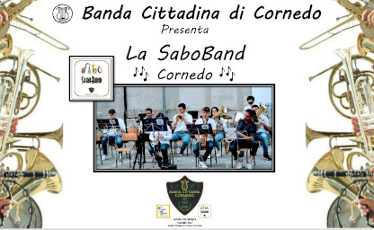
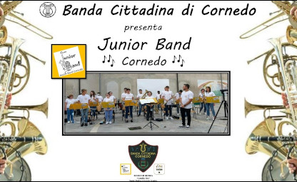
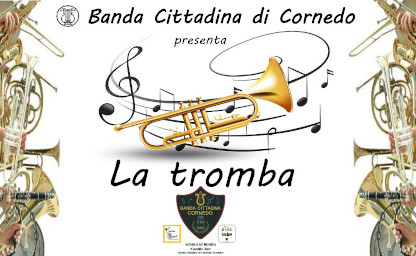
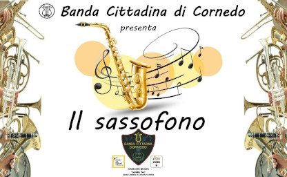
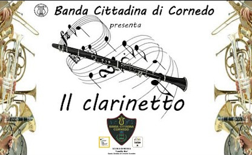
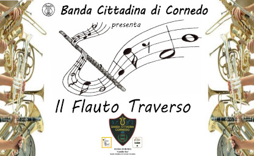
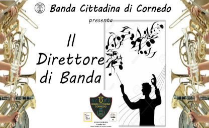
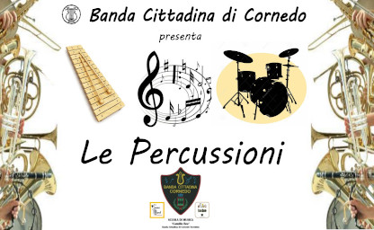
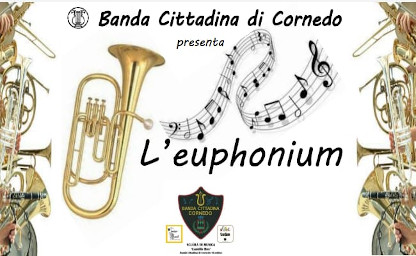
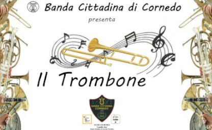

La Sabo Band
Le ferie sono finite, l'anno è ricominciato e come ormai consuetudine eccoci con il nostro DECIMO APPUNTAMENTO con il mondo della musica bandistica!
Vi presenteremo la SABO BAND! Un gruppo di giovani musicisti che ogni sabato mattina si trovano assieme per suonare e divertirsi in compagnia!
BUONA VISIONE

La Junior Band
Siete tornati dalle ferie? Siete pronti a ricominciare con la vita di tutti i giorni? Tranquilli abbiamo noi la soluzione per consolarvi!
Eccovi qua infatti il nostro NONO APPUNTAMENTO con il mondo della musica bandistica.
Il nostro batterista Andrea vi presenterà la JUNIOR BAND! Un gruppo di giovani musicisti che ogni lunedì si trovano assieme per suonare e divertirsi in compagnia!
BUONA VISIONE

La Tromba
Siete tutti in spiaggia? O al fresco in montagna?
Ovunque voi siate, vi proponiamo il nostro OTTAVO APPUNTAMENTO con il mondo della musica bandistica:
Il maestro Niccolò ci presenta sua maestà la TROMBA! Uno strumento antichissimo che con i suoi squilli potenti è indispensabile per dare la giusta a carica a tutto il gruppo!
BUONA VISIONE

Il Sassofono
SETTIMO APPUNTAMENTO!!
Anche in piena estate, i nostri giovani bandisti non si fermano!
Ed ecco a voi il SAX!
Uno strumento giovane, grintoso e versatile. Utilizzato nei generi più diversi, si adatta ottimamente e spesso sorprende per le sue sonorità inusuali e travolgenti.
Con il contributo di Davide, Anna, Renato, il piccolo Matteo e il maestro Riccardo
BUONA VISIONE

Il Clarinetto
Questo mese Valeria ci guiderà alla scoperta del clarinetto, uno strumento dal timbro suadente, ma anche grintoso, nato per suonare in compagnia, ma che emoziona sempre anche negli assoli.
Con il contributo di Chiara C, Chiara D.F., Gaia, Matteo, Silvia, Antonella e la guida della Maestra Manuela.
BUONA VISIONE

Il Flauto Traverso
Eccoci con il quinto appuntamento!!! Il protagonista di questo mese è uno strumento magico, la cui storia si perde nella notte dei tempi.
I nostri allievi e la loro insegnante Elisa ci presenteranno Il Flauto traverso. Che sia fatto di osso, legno o metallo, il suo canto melodioso incanta da sempre grandi e piccini.
BUONA VISIONE

Il Direttore della Banda
Il quarto appuntamento mensile con la Banda Cittadina di Cornedo Vicentino ci porta a scoprire il suo direttore.
Per questo mese lasciamo da parte gli strumenti musicali e vediamo assieme a Luca la figura del direttore della Banda.
BUONA VISIONE

Le Percussioni
Siamo arrivati al terzo appuntamento con gli strumenti della Banda Cittadina di Cornedo:
Nicola e Filippo assieme al maestro Andrea ci parlano e ci fanno ascoltare gli strumenti più antichi, strumenti musicali presenti fin dalla preistoria: Le Percussioni
BUONA VISIONE

L'Euphonium
In questo secondo appuntamento con il mondo della Banda Cittadina di Cornedo Vicentino e dei suoi strumenti musicali Anna ci presenta L'euphonium!
Storia, curiosità e suono. Scopriremo anche perchè ha scelto proprio questo strumento.
BUONA VISIONE

Il Trombone
Eccoci al primo appuntamento con il mondo della Banda di Cornedo e dei suoi strumenti musicali!
Oggi Alberto ci presenta il trombone! Storia, curiosità e suono. Scopriremo anche perchè ha scelto proprio questo strumento.
BUONA VISIONE